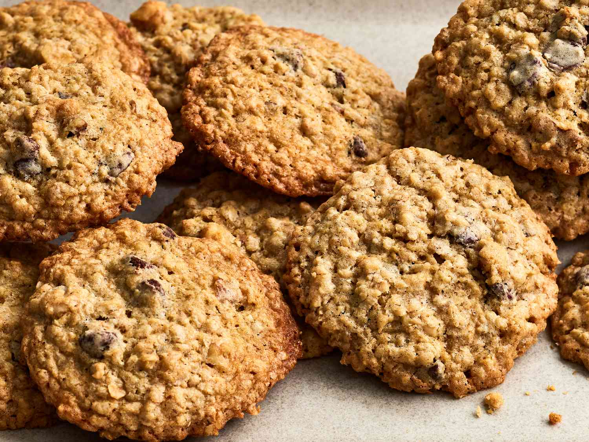

Chocolate Chip Oatmeal Cookies

Description
Sweet, soft, and chewy cookies, the perfect snack for yourself or for sharing!
Ingredients
- 1 cup butter, softened
- 1 cup packed light brown sugar
- 1/2 cup white sugar
- 2 large eggs
- 2 tsp vanilla extract
- 1 1/4 cups all-purpose flour
- 1/2 tsp baking soda
- 1 tsp salt
- 3 cups quick-cooking oats
- 1 cup walnuts, chopped
- 1 cup semisweet chocolate chips
Steps
- Preheat oven to 325 degrees F or 165 degrees C.
- Combine flour, baking soda, and salt in a bowl.
- In a separate bowl, beat butter, brown sugar, and white sugar until smooth.
- Beat in eggs one at a time until well combined, then stir in vanilla extract.
- Stir flour mixture and egg mixture together.
- Add oats, walnuts, and chocolate chips into the mixture.
- Scoop mixture into spoonfuls and transfer them onto a baking sheet.
- Bake for 12 minutes, then allow cookies to cool before serving.
Back